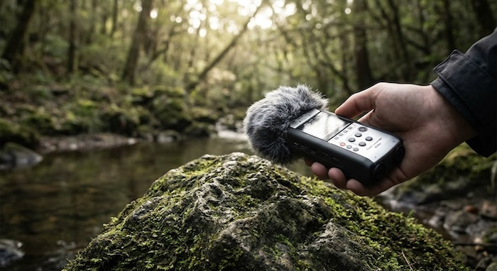

Crafting Immersive Audio & Foley Soundscapes
Explore Audio WorkFoley Engineering
Practical, hand-recorded sound effects designed to match physical movements, textures, and environmental atmospheres.
Multi-Track Mixing
layering and balancing dialogue, sound cues, background, ambience, and musical elements, cohesive audio master.
Soundscapes
Designing rich background atmospheres and cinematic cues to elevated visual storytelling.